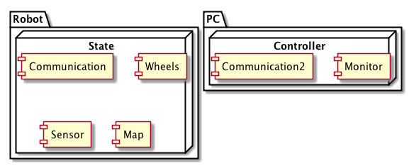
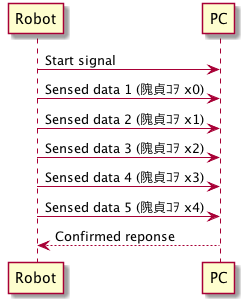

Artificial Intelligence robot 内部仕様
1 概要
- 本プログラムは、人工知能を持つロボットのプログラムである
- ロボットは超音波センサーによって周囲の障害物を検知し、自ら周囲の地図を作成する
- 一旦地図のデータを手に入れたロボットは、現在位置を忘れた後、再度その地図のどこかに配置されると自ら地図上の位置を割り出す
- ロボットの現在位置ならびに地図データは、無線により遠隔のパソコンにリアルタイムに送られる
- 複数の動作モードを持ち、マニュアルモードでは遠隔のパソコンから操作できる
- ハードウエアのロボットの代わりに、ソフトウエアシミュレーターに置き換えることができ、サービス層以下のロジックはそのまま使用できる
2 動作とUI
2.1 ドメインロジック

2.2 ロボット本体
2.2.1 TODO 基本動作
- main関数に無限ループを置き、システムに異常が起こらない限り、その無限ループを抜けることはない

2.2.2 状態表示
チップLEDによる状態表示
- 高輝度青色チップＬＥＤ ２０１２サイズ L-C170LBCT
http://akizukidenshi.com/catalog/g/gI-00697/
- 赤色チップＬＥＤ OSHR1608 ３５ｍｃｄ
3 人工知能について
- 本プロジェクトは、人工知能（Artificial Intelligence: 以下、AI）に重点が置かれる
3.1 Particle Filter
Particle Filter（粒子フィルタ Wikipedia）
3.2 Hidden Markov Model
4 ハードウエア
4.1 物理的サイズ
4.2 モジュール
4.2.2 バッテリー
4.2.3 モーター
4.2.4 モータードライバ

4.2.5 超音波距離センサ

4.2.6 無線モジュール


4.3 回路
4.3.1 電源回路
4.3.2 モーター回路
4.3.3 無線回路
5 ソフトウエア
5.1 レイヤー構造

5.1.1 UI層
5.1.2 サービス層
5.1.3 AI層
5.1.4 モニターとマニュアルコントロール
5.1.5 シミュレータ
5.1.6 等価Pythonコード
- 同じAIロジックをPythonコードで実現する
5.1.7 ロボット本体側：モジュール別
- XBee 無線制御部
- XBee API mode
- 0x10=パケット送信
- 0x90=パケット受信
- 0x8B=パケット送信の成否
- 無線通信フロー
- 障害物センサーデータ
ロボット本体が回転し、同時にデータを収集しながら送信する。
- 通常時

- エラー時
- TODO マニュアルコントロール
- 障害物センサーデータ
- libxbee
PC側（?）ライブラリ https://github.com/thomasgubler/libxbee
#include <iostream> #include <string.h> #include <unistd.h> #include <xbeep.h> #define LOCAL_CONNECTION #define USE_CALLBACKS #ifdef USE_CALLBACKS /* ========================================================================== */ class myConnection: public libxbee::ConCallback { public: explicit myConnection(libxbee::XBee &parent, std::string type, struct xbee_conAddress *address = NULL): libxbee::ConCallback(parent, type, address) {}; void xbee_conCallback(libxbee::Pkt **pkt); std::string myData; }; void myConnection::xbee_conCallback(libxbee::Pkt **pkt) { std::cout << "Callback!!\n"; int i; for (i = 0; i < (*pkt)->size(); i++) { std::cout << (**pkt)[i]; } std::cout << "\n"; std::cout << myData; /* if you want to keep the packet, then you MUST do the following: libxbee::Pkt *myhandle = *pkt; *pkt = NULL; and then later, you MUST delete the packet to free up the memory: delete myhandle; if you do not want to keep the packet, then just leave everything as-is, and it will be free'd for you */ } #endif /* USE_CALLBACKS */ /* ========================================================================== */ int main(int argc, char *argv[]) { int i; /* get available libxbee modes */ try { std::list<std::string> modes = libxbee::getModes(); std::list<std::string>::iterator i; std::cout << "Available libxbee modes:\n"; for (i = modes.begin(); i != modes.end(); i++) { std::cout << " " << *i; } std::cout << "\n"; } catch (xbee_err ret) { std::cout << "Error while retrieving libxbee modes...\n"; } try { /* setup libxbee */ libxbee::XBee xbee("xbee1", "/dev/ttyUSB0", 57600); std::cout << "Running libxbee in mode '" << xbee.mode() << "'\n"; /* get available connection types */ try { std::list<std::string> types = xbee.getConTypes(); std::list<std::string>::iterator i; std::cout << "Available connection types:\n"; for (i = types.begin(); i != types.end(); i++) { std::cout << " " << *i; } std::cout << "\n"; } catch (xbee_err ret) { std::cout << "Error while retrieving connection types...\n"; } /* make a connection */ #ifdef LOCAL_CONNECTION #ifdef USE_CALLBACKS myConnection con(xbee, "Local AT"); /* with a callback */ con.myData = "Testing, 1... 2... 3...\n"; #else libxbee::Con con(xbee, "Local AT"); /* without a callback */ #endif #else /* LOCAL_CONNECTION */ struct xbee_conAddress addr; memset(&addr, 0, sizeof(addr)); addr.addr64_enabled = 1; addr.addr64[0] = 0x00; addr.addr64[1] = 0x13; addr.addr64[2] = 0xA2; addr.addr64[3] = 0x00; addr.addr64[4] = 0x40; addr.addr64[5] = 0x33; addr.addr64[6] = 0xCA; addr.addr64[7] = 0xCB; #ifdef USE_CALLBACKS myConnection con(xbee, "Remote AT", &addr); /* with a callback */ con.myData = "Testing, 1... 2... 3...\n"; #else libxbee::Con con(xbee, "Remote AT", &addr); /* without a callback */ #endif #endif /* LOCAL_CONNECTION */ /* send data */ //con.Tx("NI"); /* like this */ con << "NI"; /* or like this */ usleep(1000000); #ifndef USE_CALLBACKS libxbee::Pkt pkt; try { //con >> pkt; /* like this */ pkt << con; /* or this */ } catch (xbee_err err) { std::cout << "Error on Rx! " << err << "\n"; return 1; } try { std::cout << "Packet length: " << pkt.size() << "\n"; for (i = 0; i < pkt.size(); i++) { std::cout << " " << i << " " << pkt[i] << "\n"; } } catch (xbee_err err) { std::cout << "Error accessing packet! " << err << "\n"; return 1; } usleep(1000000); #endif /* !USE_CALLBACKS */ } catch (xbee_err err) { std::cout << "Error " << err << "\n"; } return 0; }大きすぎるため、これを参考にし自作を心がける。
- XBee SmartLabXBeeAPI library
mbed側のライブラリ。必要でないものも多いので、自作を心がける。
- Class diagram
- Class diagram
- XBee API mode
- Ping 超音波センサー部
- 状態インジケータ部
- モータードライバ部
5.1.8 PC側
6 diagram example